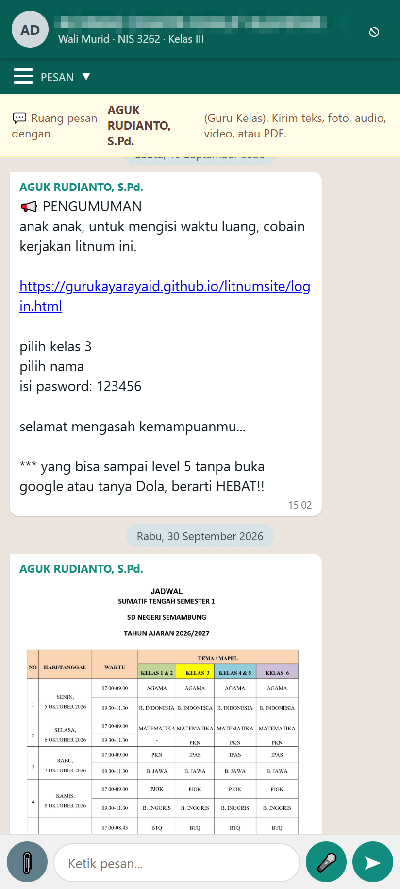
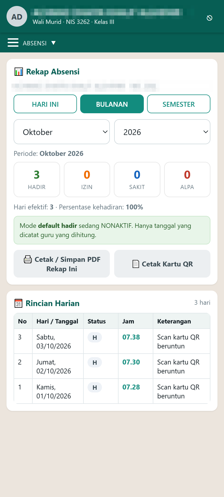
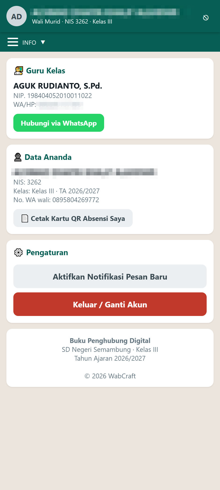

+ Add project
💡 Klik tombol biru + Add project untuk membuat proyek baru.
Panduan ini disusun berurutan. Kerjakan satu bab, selesai, lalu lanjut ke bab berikutnya.
Panduan ini ditujukan untuk guru, operator sekolah, atau siapa pun yang akan memasang ulang aplikasi Buku Penghubung Digital di server milik sendiri — misalnya pindah ke sekolah lain, ganti tahun ajaran, atau membangun dari berkas sumber yang baru diunduh.
Anda tidak perlu bisa pemrograman. Cukup ikuti langkah, salin perintah yang tersedia, dan perhatikan gambar ilustrasi.
Ke mana file aplikasi pergi, dan layanan apa yang bekerja di belakang layar.
Aplikasi ini terdiri dari tiga bagian yang saling terhubung lewat internet. Sebelum memasang, pahami dulu gambar besar ini supaya Anda tahu setiap langkah sedang mengerjakan apa.
Mengaktifkan database (chat, absensi, izin), mengisi konfigurasi, dan
menerbitkan aplikasi ke alamat …web.app supaya bisa dibuka dari browser.
Menyediakan tempat file besar (foto/video/PDF) supaya tidak membebani kuota Firebase. Gratis 10 GB + unduhan tanpa batas.
Software, akun, dan berkas yang harus siap sebelum memulai.
| Kebutuhan | Versi / Pilihan | Cara mendapatkan |
|---|---|---|
| PC / Laptop | Windows 10 atau 11 | Sudah dipakai sehari-hari, cukup |
| Koneksi internet | — | Wajib ada saat setup & deploy |
| Node.js | Versi 18 atau lebih baru (LTS) | https://nodejs.org → unduh LTS → Next sampai selesai |
| Firebase CLI | Versi terbaru | Buka Terminal/PowerShell, ketik npm install -g firebase-tools |
| Akun Google | 1 akun | Untuk login Firebase Console |
| Akun Cloudflare | 1 akun (gratis) | https://dash.cloudflare.com/sign-up |
| Android Studio + JDK 17 | Opsional (Bab 5) | https://developer.android.com/studio |
node -v # harus muncul v18.x atau v20.x npm -v # harus muncul angka versi firebase --version # kalau "tidak dikenal", jalankan install di bawah npm install -g firebase-tools
powershell → Enter.Siapkan folder project buku-penghubung (hasil unduh ZIP/RAR) di lokasi mudah, contoh:
D:\buku-penghubung. Isinya kira-kira seperti ini:
buku-penghubung\ ├── app\ => kode aplikasi (web) yang di-deploy │ ├── index.html │ ├── js\config.js => BERKAS INI YANG KITA ISI │ └── css\, icons\, models\ ├── android\ => proyek Android untuk build APK ├── cloudflare\ => worker.js + wrangler.toml ├── firebase\ => aturan keamanan database & storage ├── firebase.json => konfigurasi deploy (public: "app") ├── .firebaserc => nama project Firebase ├── PASANG-FIREBASE.bat => KLIK 2x untuk isi config otomatis └── build-release.bat => build APK sekali jalan
buku-penghubung, bukan dari dalam folder app.
firebase.json harus berada sejajar dengan folder app.Bagian wajib. Setelah bab ini, aplikasi sudah bisa dibuka lewat browser.
Kunjungi https://console.firebase.google.com lalu login memakai akun Google Anda. Klik tombol besar + Add project / Create a project.
Misal: buku-penghubung-sekolahanda. Lanjutkan (Google Analytics boleh
dimatikan), lalu tunggu sampai muncul tombol Continue / Create project.
buku-penghubung-abc12) — nama ini dipakai pada alamat situs
https://NAMA.web.app.Di menu kiri pilih Build → Realtime Database → klik Create Database.
Di halaman Realtime Database, salin alamat yang tertera di atas tabel data, bentuknya:
https://<nama-project>-default-rtdb.asia-southeast1.firebasedatabase.appPastikan tulisannya asia-southeast1 (singapura) — kalau salah wilayah, data tidak akan tersambung.
config.jsKlik ikon ⚙ Settings (roda gigi, pojok kiri atas) → tab General →
gulir ke bagian Your apps → klik ikon web </> →
beri nama (mis. buku-penghubung) → Register app.
Muncul blok kode firebaseConfig berisi
apiKey, authDomain, databaseURL, projectId, dll. Salin semuanya.
fb.txtDi folder project, buka (atau buat) berkas teks bernama fb.txt memakai Notepad,
lalu tempel hasil salinan tadi. Simpan dengan Ctrl+S.
PASANG-FIREBASE.batKlik dua kali berkas PASANG-FIREBASE.bat di folder project.
Skrip akan membaca fb.txt lalu:
app\js\config.js secara otomatis (tanpa salah ketik),app\ ke android\app\src\main\assets\www\,MEMASANG KONFIGURASI FIREBASE Membaca fb.txt ... [OK] app/js/config.js diperbarui [OK] app/* disalin ke android/.../assets/www/ apiKey : AIzaSy........................ databaseURL: https://.....asia-southeast1... SELESAI. Tutup jendela ini.
databaseURLNilai ini sering tidak ikut di blok konfigurasi. Buka app\js\config.js,
pastikan barisnya lengkap dan wilayahnya benar:
databaseURL: "https://<nama-project>-default-rtdb.asia-southeast1.firebasedatabase.app",
Kalau berbeda, betulkan manual lalu salin ulang folder app ke assets/www.
apiKey atau databaseURL masih kosong: ulangi langkah 3.3.Database masih dalam test mode (terbuka untuk semua orang) dan akan kedaluwarsa dalam 30 hari.
Setelah lewat, semua akses ditolak dan aplikasi berhenti bekerja. Aturan sudah disiapkan di folder
firebase\.
firebase login # sekali saja, ikuti petunjuk di browser firebase deploy --only database,storage
Cara manual (tanpa terminal): buka Realtime Database → tab Rules → tempel isi
firebase\database.rules.json → klik Publish. Ulangi untuk
Storage dengan firebase\storage.rules.
pengaturan
yang dipakai fitur Hari Efektif & Libur. Pakai berkas yang disediakan, jangan aturan lama.firebase deploy --only hosting found 14 files in app hosting[buku-penghubung-f579b]: file upload finished hosting[buku-penghubung-f579b]: https://<nama-project>.web.app COMPLETE ✓
found 14 files in app
Artinya hanya isi folder app yang diunggah.
found 78 files in .
firebase.json masih memakai "public": ".".
Kalau ditanya "index.html already exists. Overwrite?" jawab No — kalau terlanjur Yes, tampilan aplikasi hilang.
firebase.json yang benar (sudah tersedia di
project, pastikan public menunjuk folder app):{
"database": { "rules": "firebase/database.rules.json" },
"storage": { "rules": "firebase/storage.rules" },
"hosting": { "public": "app", "ignore": ["**/.*", "**/node_modules/**"] }
}
<nama-project>.web.app| No | Uji coba | Tanda berhasil |
|---|---|---|
| 1 | Kirim pesan dari HP A | Muncul real-time di HP B |
| 2 | Kirim surat izin dari HP A | Presensi hari itu berubah jadi I / S |
| 3 | Lampirkan foto dari HP A | Foto tampil & bisa dibuka besar |
| 4 | Cek Firebase Console → Realtime Database | Node chats, izin, absensi bertambah |



Tempat file foto, video, audio, dan PDF. Opsional, tapi sangat disarankan.
HP (upload) → Worker (validasi)
→ R2 (simpan file)
→ URL file dibagikan ke chat
Buka https://dash.cloudflare.com/sign-up → daftar dengan email → verifikasi email.
Login → di menu kiri pilih R2 → Create bucket.
bpd-media (harus sama dengan isi wrangler.toml)Pada bucket → tab Settings → bagian Public access → Allow Access → centang Allow public access.
https://pub-xxxxx.r2.dev — dipakai di langkah 6.Di halaman R2 klik Manage R2 API Tokens → Create API token:
bpd-uploadbpd-mediaKlik Create API Token lalu catat Access Key ID, Secret Access Key, dan Endpoint — hanya muncul sekali.
Wrangler adalah alat resmi Cloudflare untuk mengirim Worker ke internet.
npm install -g wrangler # atau tanpa install: npx wrangler npx wrangler login # browser terbuka → klik Allow node -v # minimal v18
PUBLIC_DOMAINWorker butuh tahu alamat publik bucket untuk membuat URL file.
cd cloudflare npx wrangler secret put PUBLIC_DOMAIN ? Enter value: https://pub-xxxxx.r2.dev <- paste URL hasil langkah 3
npx wrangler deploy Uploaded bpd-upload-media Deployed bpd-upload-media triggers https://bpd-upload-media.<username>.workers.dev ✓
….workers.dev) —
URL ini yang dimasukkan ke aplikasi pada langkah berikutnya.app/js/config.js)Buka berkas app\js\config.js, cari bagian R2_CONFIG,
lalu ganti isinya:
var R2_CONFIG = { workerUrl : "https://bpd-upload-media.<username>.workers.dev", publicUrl : "https://pub-xxxxx.r2.dev", enabled : true };
Perubahan config belum aktif sampai diunggah ulang:
firebase deploy --only hostingUji: login sebagai guru → buka chat salah satu murid → klik 📎 → pilih Gambar → tunggu sampai tampil di chat. Selesai! ✅
Menghasilkan berkas .apk yang di-install di HP wali murid.
Cara termudah: klik dua kali berkas build-release.bat di folder project.
Skrip mencari Android SDK otomatis lalu menjalankan build.
Cara manual lewat terminal:
cd android .\gradlew.bat assembleRelease BUILD SUCCESSFUL in 2m 14s
android\app\build\outputs\apk\release\ └── app-release.apk (salin & ganti nama, mis. ...-v1.6-release.apk)
Build release harus ditandatangani (signed). Buat berkas
android\keystore.properties lalu build ulang. File keystore
(mis. wabcraft-release.jks) harus dijaga & dibackup.
Ubah nomor versi di
android\app\build.gradle: versionName "1.6"
dan versionCode 7.
android\app\src\main\assets\www\, bukan folder app\.
Itu sebabnya PASANG-FIREBASE.bat menyalin otomatis. Jika Anda mengedit
config.js setelah build, build ulang APK-nya.Centang satu per satu sebelum membagikan aplikasi ke wali murid.
firebaseConfig sudah ditempel ke fb.txt & PASANG-FIREBASE.bat dijalankandatabaseURL di config.js lengkap & benar wilayahnyafirebase deploy --only database,storage)found 14 files in appbpd-media dibuat & Public access aktifPUBLIC_DOMAIN terisi dengan URL publik R2.workers.dev tercatatR2_CONFIG terisi & enabled: trueBUILD SUCCESSFUL) & sudah di-signconfig.js sudah disesuaikanAPP.adminPassword (config.js) sebelum dibagikan,
dan jangan sebarkan berkas keystore APK.Cari gejalanya di kolom kiri, lalu kerjakan solusinya.
| Gejala | Penyebab & Solusi |
|---|---|
| Masih tertulis "MODE DEMO" | apiKey / databaseURL masih kosong.
Jalankan ulang PASANG-FIREBASE.bat. Kalau lewat APK, pastikan
config.js juga tersalin ke assets\www\js\. |
| "database not found" | Realtime Database belum dibuat di Console. Kerjakan langkah 3.2, lalu deploy ulang. |
| "Permission denied" di console browser | Aturan belum di-publish, atau test mode sudah lewat 30 hari.
Jalankan firebase deploy --only database,storage. |
| Pesan tidak muncul di HP lain | Kedua perangkat harus memakai FIREBASE_CONFIG yang sama persis.
Periksa juga databaseURL — salah wilayah berarti data masuk ke database lain. |
| Deploy gagal: "Executable files are forbidden on the Spark billing plan" | firebase.json memakai "public": "." sehingga
file Android ikut terunggah. Ubah menjadi "public": "app". |
| Halaman "Firebase Hosting Setup Complete" | index.html tertimpa. Salin ulang dari
android\app\src\main\assets\www\index.html, lalu deploy lagi. |
| Upload foto gagal / "Gagal koneksi ke R2" | Periksa R2_CONFIG.workerUrl benar & enabled: true;
secret PUBLIC_DOMAIN sudah diisi; bucket sudah Public access. |
| "Tipe file tidak diizinkan" | Yang diizinkan: jpg, png, gif, webp, mp4, webm, mp3, m4a, PDF — maksimal 20 MB. |
| Tombol Pengaturan Hari Efektif gagal menyimpan | Aturan database belum punya node pengaturan. Pakai
firebase\database.rules.json bawaan. |
| Build APK gagal / "ANDROID_HOME belum diset" | Install Android Studio, buka sekali, lalu jalankan lagi
build-release.bat (skrip mencari SDK otomatis). |
| Wrangler: "not logged in" / deploy gagal | Jalankan npx wrangler login, pastikan Node.js ≥ 18, dan nama bucket
di wrangler.toml sama dengan di Cloudflare. |
Yang perlu Anda ketahui sebelum memakai ini jangka panjang.
| Komponen | Kuota gratis | Keterangan |
|---|---|---|
| Firebase Hosting | 10 GB transfer / bulan | Cukup untuk sekolah dasar |
| Firebase Realtime Database | 10 GB penyimpanan, 10 GB/hari unduhan | Chat & absensi sangat ringan |
| Cloudflare R2 | 10 GB + unduhan tanpa batas | Media chat |
| Cloudflare Worker | 100 ribu request / hari | Upload media |
| GitHub Pages (panduan & landing page) | Tanpa batas (public repo) | Dokumen & unduhan APK |
| Total | $0 / bulan | Selama tetap di kuota gratis |
Q: Harus bisa coding?
Tidak. Ikuti langkahnya saja; bagian yang perlu diubah sudah disiapkan berkasnya.
Q: Bisa dipakai untuk sekolah lain / kelas lain?
Bisa. Buat project Firebase baru, ubah nama sekolah, kelas, dan daftar murid di
app/js/config.js, lalu deploy.
Q: Bagaimana di akhir tahun ajaran?
Kosongkan data lama lewat menu guru Reset Data, hapus isi bucket R2, lalu perbarui
daftar murid & tahun ajaran.
# 1. isi konfigurasi (klik 2x): PASANG-FIREBASE.bat firebase deploy --only database,storage # aturan keamanan firebase deploy --only hosting # terbitkan aplikasi # 2. cloudflare (sekali setup) cd cloudflare npx wrangler secret put PUBLIC_DOMAIN npx wrangler deploy # 3. apk android cd android & .\gradlew.bat assembleRelease